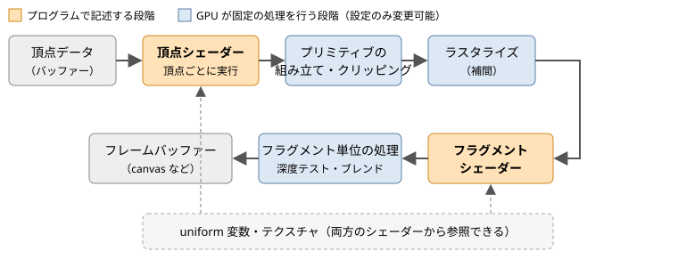

1. WebGL の概要
この章では、WebGL がどのような技術で、どのような仕組みで描画を行うのかを概観します。
1.1. WebGL とは
WebGL は、Web ブラウザーから GPU を使って 2D・3D グラフィックスを描画するための JavaScript API です。HTML の canvas 要素に対して描画を行います。仕様は 3D グラフィックスの標準化団体である Khronos Group が策定しています。
WebGL は、組み込み機器向けのグラフィックス API である OpenGL ES をもとに設計されています。表 1.1 に示すように、WebGL のバージョンは OpenGL ES のバージョンに対応しています。
WebGL |
ベースとなる API |
シェーダー言語 |
コンテキストの取得 |
|---|---|---|---|
WebGL 1.0 |
OpenGL ES 2.0 |
GLSL ES 1.00 |
|
WebGL 2.0 |
OpenGL ES 3.0 |
GLSL ES 3.00 |
|
1.2. WebGL 1.0 と 2.0 の違い
WebGL 2.0 では、WebGL 1.0 で拡張機能として提供されていた機能の多くが標準機能になり、さらに新しい機能が追加されました。主な違いを表 1.2 に示します。
機能 |
概要 |
|---|---|
頂点配列オブジェクト（VAO） |
頂点属性の設定をまとめて保存し、1 回の呼び出しで切り替えられます（第 5 章） |
インスタンス描画 |
同じ形状を 1 回の描画コールで多数描画します（第 12 章） |
Uniform Buffer Object |
複数の uniform 変数をバッファーにまとめ、プログラム間で共有します（第 12 章） |
複数レンダーターゲット（MRT） |
フラグメントシェーダーから複数のカラーバッファーへ同時に出力します |
3D テクスチャ、テクスチャ配列 |
3 次元のテクスチャや、同じ大きさのテクスチャを束ねた配列を使います |
2 のべき乗以外のサイズのテクスチャ |
WebGL 1.0 ではミップマップや REPEAT が使えなかったが、2.0 では制限なく使えます |
Transform Feedback |
頂点シェーダーの出力をバッファーに書き戻します |
GLSL ES 3.00 |
|
本書では WebGL 2.0 だけを扱います。インターネット上の WebGL の解説には WebGL 1.0 を前提にしたものも多いため、読み比べる際は注意してください。シェーダーの書き方の違いは第 4 章で説明します。
1.3. WebGPU との関係
WebGPU は、WebGL の後継として W3C で策定された新しいグラフィックス API です。Vulkan、Metal、Direct3D 12 といった現代的なネイティブ API の設計を取り入れており、GPU を汎用計算に使うコンピュートシェーダーにも対応しています。
一方、WebGL は長年にわたって主要なブラウザーで安定して動作しており、既存のライブラリや資料も豊富です。また、頂点データ、シェーダー、座標変換、テクスチャといった本書で学ぶ概念は WebGPU でもそのまま通用します。WebGL でこれらの基礎を身に付けておけば、WebGPU へ移行する際にも役立ちます。
1.4. GPU による描画の仕組み
WebGL での描画は、CPU 上の JavaScript が GPU に命令を送り、GPU が大量の頂点やピクセルを並列に処理するという形で行われます。JavaScript で 1 ピクセルずつ色を計算するのではなく、「どのような形を、どのような方法で塗るか」を GPU に伝えるのが WebGL プログラムの役割です。
GPU が頂点データから画面のピクセルを作り出すまでの一連の処理をレンダリングパイプラインと呼びます。WebGL 2.0 のレンダリングパイプラインの概略を図 1.1 に示します。


図 1.1 レンダリングパイプラインの概略
各段階の役割は次のとおりです。
頂点シェーダー: 頂点 1 つごとに実行されるプログラムです。頂点の座標を変換し、画面上のどこに表示するかを決めます。
プリミティブの組み立て・クリッピング: 頂点をまとめて三角形や線分（プリミティブ）を組み立てます。表示範囲の外にはみ出した部分は切り取られます。
ラスタライズ: 三角形が覆うピクセルを求め、ピクセルごとの処理単位であるフラグメントを生成します。このとき、頂点シェーダーが出力した値（色やテクスチャ座標など）は、三角形の内部で補間されます。
フラグメントシェーダー: フラグメント 1 つごとに実行されるプログラムです。ピクセルの色を決めます。
フラグメント単位の処理: 深度テスト（第 8 章）やブレンド（第 12 章）を行い、最終的な色をフレームバッファーに書き込みます。
この中で、プログラマーが記述するのは頂点シェーダーとフラグメントシェーダーの 2 つです。シェーダーは GLSL という C 言語に似た言語で記述し、実行時にコンパイルして GPU に転送します。その他の段階は GPU が固定の処理を行い、プログラムからは有効・無効や計算方法などの設定だけを変更できます。
WebGL の API は、この設定を変更する関数と、描画を指示する関数の集まりだと考えることができます。WebGL は内部に多数の設定（ステート）を持っており、gl.enable や gl.bindBuffer などの関数でそれを書き換えてから、gl.drawArrays などの描画関数を呼び出します。描画関数は、呼び出された時点のステートに従って描画を行います。この「ステートマシン」としての性質は WebGL を理解するうえで重要です。